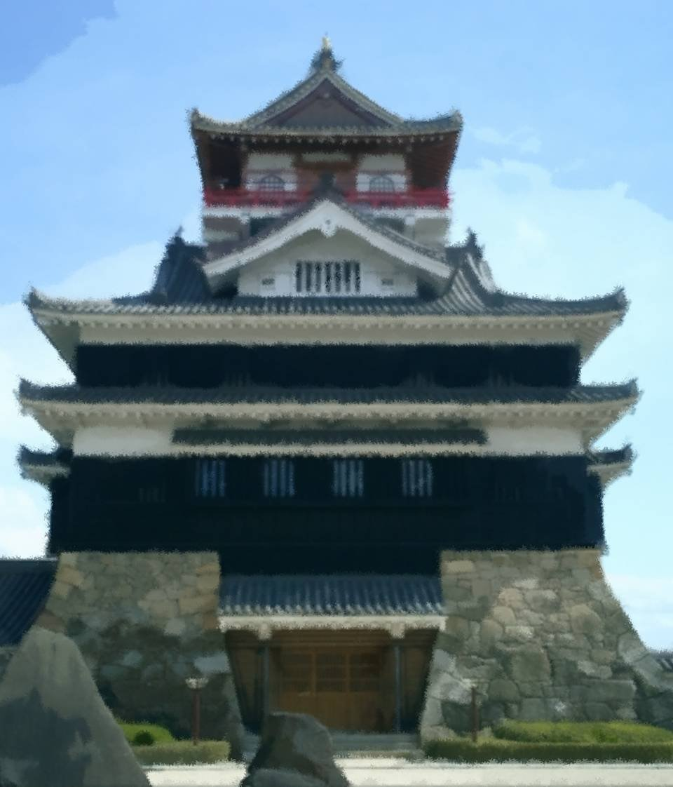
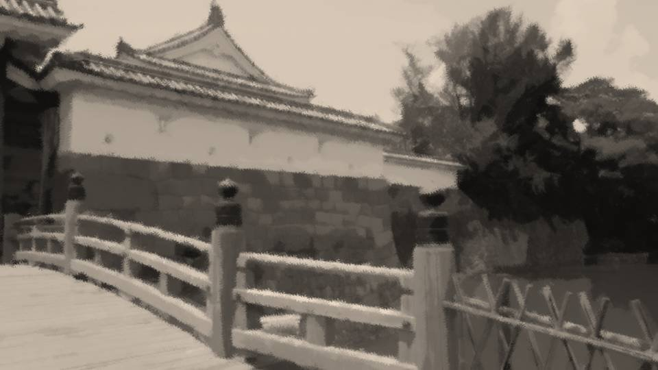
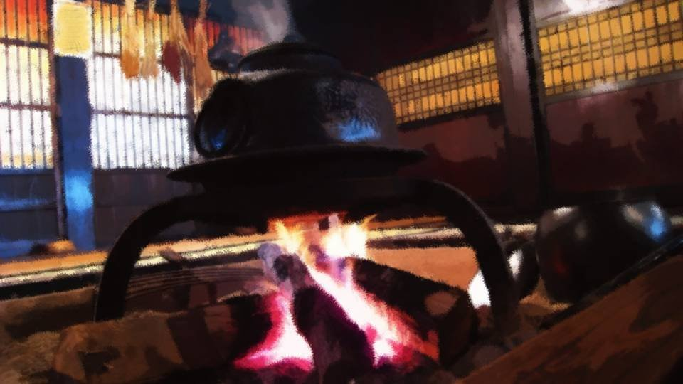
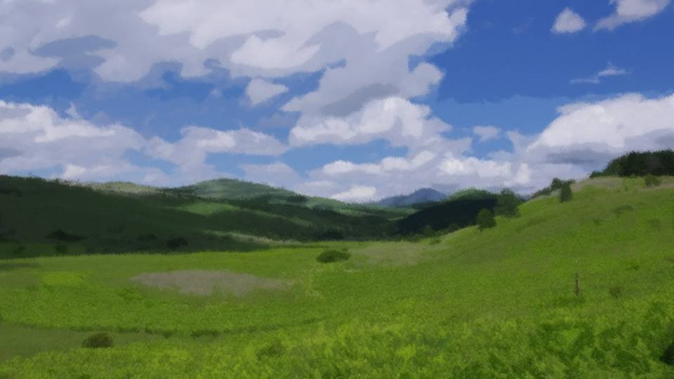
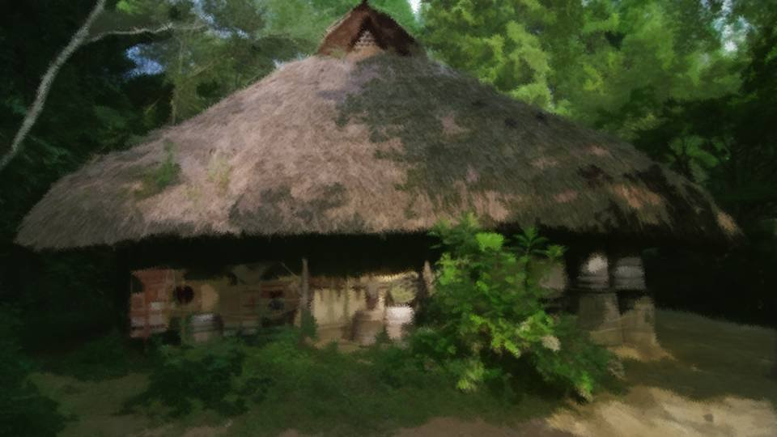
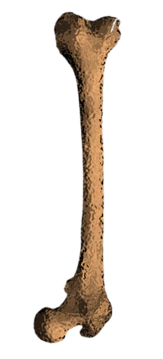

楽園の入り口
山奥の集落に迷い込んだ者が殿に送った書簡

台所奉行として、お館様にもオレの手腕を見せることができた。
これでオレの出世もますます加速していくことだろう。
これでオレの出世もますます加速していくことだろう。
農民出身で親父は足軽。
こんなオレが出世するためには、家柄ではなく実力を見てくれる方でないとダメだ。
麻生田家に仕官する前は、本当にひどいものだった。
こんなオレが出世するためには、家柄ではなく実力を見てくれる方でないとダメだ。
麻生田家に仕官する前は、本当にひどいものだった。

オレは以前、間川基義殿に仕えていた。
日本一の弓取りと言われている間川基義殿―― 間川家は湊氏を祖とする昔ながらの貴族だ。
そんな家柄だから、家臣も誰もかもが家柄にこだわる者しかいない。
実力ではなく、どの家に生まれたかでその後の運命が決まってしまうのだ。
日本一の弓取りと言われている間川基義殿―― 間川家は湊氏を祖とする昔ながらの貴族だ。
そんな家柄だから、家臣も誰もかもが家柄にこだわる者しかいない。
実力ではなく、どの家に生まれたかでその後の運命が決まってしまうのだ。
それでもオレはめげずに、間川家の役に立とうと必死に働いた。
まあ、正確には間川家ではなく、基義殿の家臣の家臣の家臣だったわけだが。
それでもオレ1人が奮闘したところで認めてもらえるわけがなく―― オレはひっそりと間川家を去ったのだった。
まあ、正確には間川家ではなく、基義殿の家臣の家臣の家臣だったわけだが。
それでもオレ1人が奮闘したところで認めてもらえるわけがなく―― オレはひっそりと間川家を去ったのだった。
あれは、オレが18歳の頃だったと思う。
お館様がオレを奉公人として拾ってくださり、ここでこそ役に立とうと今まで以上に働いた。
お館様は思った通りの人だった。
身分にこだわらず、純粋に実力だけで評価し、適した役職を与えて下さる。
オレは台所奉行だろうが何だろうが、できることを精一杯やり抜いた。
お館様がオレを奉公人として拾ってくださり、ここでこそ役に立とうと今まで以上に働いた。
お館様は思った通りの人だった。
身分にこだわらず、純粋に実力だけで評価し、適した役職を与えて下さる。
オレは台所奉行だろうが何だろうが、できることを精一杯やり抜いた。
薪 や水などあらゆるものを節約し、台所にかかる経費も大幅に下げることに成功したオレは、お館様からお褒めの言葉をいただくことができた。
でも、オレはまだまだこんなものじゃない。
もっと、もっと実力を見せつけるのだ。
でも、オレはまだまだこんなものじゃない。
もっと、もっと実力を見せつけるのだ。
そんなある日、祀耀309年の一二月。
間川殿に仕えていた頃の友人と会う機会があった。
もちろん、そんなことお館様には言えない。
間川家は麻生田家を飲みこむ勢いで勢力を伸ばし、来年にもどうなるか分からないのだ。
間川家の密偵とでも思われたら、たまったものではない。
間川殿に仕えていた頃の友人と会う機会があった。
もちろん、そんなことお館様には言えない。
間川家は麻生田家を飲みこむ勢いで勢力を伸ばし、来年にもどうなるか分からないのだ。
間川家の密偵とでも思われたら、たまったものではない。

「よう吉郎！ 久しぶりだなあ！」
「よう豊吉！ 久しぶりだなあ！」
おうむ返しのあいさつを交わし、ガハハと笑いあう。
「よう豊吉！ 久しぶりだなあ！」
おうむ返しのあいさつを交わし、ガハハと笑いあう。
「どうしたんだ？ わざわざ間川殿の家臣が麻生田領に入るなんて。
見つかったらどうなると思うんだ？」
「はは！ それを言ったら俺を麻生田領に入れたお前だってただじゃすまないだろ！？」
豊吉は陽気に笑うが、危険を承知でオレに会いに来たのだ。
ただ遊びに来たわけじゃないのは分かっている。
「はは！ それを言ったら俺を麻生田領に入れたお前だってただじゃすまないだろ！？」
豊吉は陽気に笑うが、危険を承知でオレに会いに来たのだ。
ただ遊びに来たわけじゃないのは分かっている。
「吉郎よ……麻生田家はどうだ？」
「どうって……。 お館様は厳しいお方だ。 だけど、それだけ仕事ぶりに目を光らせるんだ。 身分ではなく仕事ぶりを見て下さる。 オレが出世するには絶好の場所さ」
「そうか……」
陽気な豊吉の表情が曇り出し、口も重たくなる。
やはり、ただことではないようだ。
「どうって……。 お館様は厳しいお方だ。 だけど、それだけ仕事ぶりに目を光らせるんだ。 身分ではなく仕事ぶりを見て下さる。 オレが出世するには絶好の場所さ」
「そうか……」
陽気な豊吉の表情が曇り出し、口も重たくなる。
やはり、ただことではないようだ。
「なあ吉郎……
間川家に戻る気はないか？」
「え？」
「麻生田家をやめて、間川家に戻ってこいよ」
「そういうことか……。 もうすぐ、麻生田家は滅びるんだな？」
「ああ……」
「え？」
「麻生田家をやめて、間川家に戻ってこいよ」
「そういうことか……。 もうすぐ、麻生田家は滅びるんだな？」
「ああ……」
「それはいつだ？」
「おそらく、来年の初夏辺りだろう。 基義様は帝の居城がある西の都へ行かれるおつもりだ。 その時、必ずこの麻生田領を通ることになる」
「おそらく、来年の初夏辺りだろう。 基義様は帝の居城がある西の都へ行かれるおつもりだ。 その時、必ずこの麻生田領を通ることになる」
「なるほど……。
麻生田領に無断で立ち入れば、間川が麻生田に侵攻したことになる。
それを麻生田が手を出さずに見過ごしたとすれば、事実上間川に降参したことになる。
麻生田が麻生田であり続けるためには、その時に間川を攻撃しなくてはならない」
「そういうことだ。
だから……
戻ってこい。麻生田が間川に勝てるはずない」
「オレは……！ オレは農民出身で親父は足軽だ……！ そんなオレが間川では名をあげられないのは知っているだろう！ オレが活躍できるのは、この麻生田家だけなんだ！」
「吉郎……気持ちは分かる。 だけど……いいじゃないか、出世できなくても。 間川家ならずっと安泰――」
「オレは……！ オレは農民出身で親父は足軽だ……！ そんなオレが間川では名をあげられないのは知っているだろう！ オレが活躍できるのは、この麻生田家だけなんだ！」
「吉郎……気持ちは分かる。 だけど……いいじゃないか、出世できなくても。 間川家ならずっと安泰――」
「寝言を言うな！ オレが麻生田家に仕えたのは、この国ででっかい存在になるためだ！
間川に戻るくらいなら、麻生田家と一緒に滅びる方がマシだ！」
「吉郎……」
「すまん、豊吉…… お前がオレを心配してここまで来てくれたのは分かる。 だけど……」
「…………」
「吉郎……」
「すまん、豊吉…… お前がオレを心配してここまで来てくれたのは分かる。 だけど……」
「…………」
オレらの間に、これ以上会話が続かなかった。
麻生田家は、あと半年ほどで滅亡する運命にある。
せっかくオレの居場所を見つけたのに、このまま黙っていられるかよ……！
オレに……オレにできることは何だ！？ 何なんだ！？
麻生田家は、あと半年ほどで滅亡する運命にある。
せっかくオレの居場所を見つけたのに、このまま黙っていられるかよ……！
オレに……オレにできることは何だ！？ 何なんだ！？
オレは台所奉行だ！
台所奉行であるオレにできることは―― 一体、何なんだ……？
台所奉行であるオレにできることは―― 一体、何なんだ……？
――祀耀310年初春。
ほんの少しだけ寒さが緩み始め、木々の芽がふっくらとしてきた頃だ。
ほんの少しだけ寒さが緩み始め、木々の芽がふっくらとしてきた頃だ。
オレはお館様に直接訴えた。
兵たちが強くなれる食材を探し出し、麻生田家の勢力拡大に貢献したい。
食べ物こそが人間の力の源であり、不可欠なものだ。
兵たちが強くなれる食材を探し出し、麻生田家の勢力拡大に貢献したい。
食べ物こそが人間の力の源であり、不可欠なものだ。
勘違いされては困るが、オレは台所奉行であって料理人ではない。
台所の管理をするのがオレの仕事で、食事を作ったり材料を調達したりするのは料理人の仕事。
だから、強くなれる食材を探すのはやや仕事の範囲外ではある。
しかし、このままでは――。
台所の管理をするのがオレの仕事で、食事を作ったり材料を調達したりするのは料理人の仕事。
だから、強くなれる食材を探すのはやや仕事の範囲外ではある。
しかし、このままでは――。
お館様は、オレのこれまでの功績を認めて下さり、一月だけ諸国をめぐる許可を与えて下さった。
間川が攻めてくることなど言えるはずもなく、兵に活力を与えるものを探したい、という名目にとどめた。
お供なんていない。すべてオレ1人でやるのだ。
間川が攻めてくることなど言えるはずもなく、兵に活力を与えるものを探したい、という名目にとどめた。
お供なんていない。すべてオレ1人でやるのだ。
オレは勘を働かせながら道を決める。
行くなら、ほとんど人が踏み入ったことのない秘境の地だ。
そうでもなくては、間川家をひっくり返せるようなものなど見つからない。
人がいる所で見つかるものなんて、たかが知れている。
食えばたちどころに精がつき、鬼神のような兵になれる食材だ。
行くなら、ほとんど人が踏み入ったことのない秘境の地だ。
そうでもなくては、間川家をひっくり返せるようなものなど見つからない。
人がいる所で見つかるものなんて、たかが知れている。
食えばたちどころに精がつき、鬼神のような兵になれる食材だ。
そんな都合のいいものなんてあるはずがない。それくらいは承知している。
雲をつかむような話ではあるが、雲をつかまなくてはそれで終わり。
雲をつかむような話ではあるが、雲をつかまなくてはそれで終わり。
オレが最初の1歩を踏み出す時も、葛藤がなかったとは言わない。
こんなことをしても無駄だと言うオレ。
こうしなければ生き延びられないと言うオレ。
2つの相反する考えがオレの足を少しだけ鈍らせていた。
だけど、後戻りなんてできるはずがない。
全くの成果なしでは、オレのわがままを許可したお館様の顔に泥を塗ることになる。
こんなことをしても無駄だと言うオレ。
こうしなければ生き延びられないと言うオレ。
2つの相反する考えがオレの足を少しだけ鈍らせていた。
だけど、後戻りなんてできるはずがない。
全くの成果なしでは、オレのわがままを許可したお館様の顔に泥を塗ることになる。
…………
…………
ここは……。

城から少し進んだところで、大きな窪地に着く。
周囲を高地に囲まれ、そして入江――。
間川が西の都へ行く時は、必ずここを通る。
もしここで奇襲することができれば……。
周囲を高地に囲まれ、そして入江――。
間川が西の都へ行く時は、必ずここを通る。
もしここで奇襲することができれば……。
その時、オレに妙案が浮かぶ。
もしここで商人を雇い、うまいものを振る舞えばどうだろうか。
きっと今川も足を止めて休憩するだろう。
もしここで商人を雇い、うまいものを振る舞えばどうだろうか。
きっと今川も足を止めて休憩するだろう。
よし、この場所は覚えておこう。
確かこの場所は――
確かこの場所は――
樽狭間だ。
――オレの所持品は、最低限の資金と小太刀くらいだ。
着るものは適当に川を見つけて洗い、わらじの紐が切れたら自分で直すことになる。
山賊に見つかったら全力で逃げる。
一見無謀な旅だが、このまま何もしない方が、ずっと無謀であることは間違いない。
着るものは適当に川を見つけて洗い、わらじの紐が切れたら自分で直すことになる。
山賊に見つかったら全力で逃げる。
一見無謀な旅だが、このまま何もしない方が、ずっと無謀であることは間違いない。
お館様も、なんとなくそれを感じ取ったのだろう。
しかし、オレにこれだけの準備しかさせてもらえなかったのは、本当に麻生田家奉公人として死ねる意思があるのか。
そして、この最低限にも満たない準備で大仕事を成し遂げられるのか。
しかし、オレにこれだけの準備しかさせてもらえなかったのは、本当に麻生田家奉公人として死ねる意思があるのか。
そして、この最低限にも満たない準備で大仕事を成し遂げられるのか。
お館様は、オレ自身も試そうとしている。
これは、滅多にない出世の機会だ。
これは、滅多にない出世の機会だ。
最初の夜を迎えたのは、樽狭間を抜けた山の中だった。
さすがに少し疲れたし、ここで夜を明かすことにしよう。
それにしても、山賊に襲われるかと思ったが、ずいぶんと平和な山だ。
以前はもっと荒れていたはずなのだが。
さすがに少し疲れたし、ここで夜を明かすことにしよう。
それにしても、山賊に襲われるかと思ったが、ずいぶんと平和な山だ。
以前はもっと荒れていたはずなのだが。
そうか、お館様はこの地の整備も抜かりなく行い、この地を商人たちが自由に行き交う活気ある地にしたいとのお考えだ。
そのためには、山賊の 類 がいては元も子もない。
お館様はこういう道路の整備から始め、着々と夢に向かって突き進んでおられるようだ。
オレだって夢は大きいのだ！ 夢の大きさなら、お館様にだって負けておらぬ！
そのためには、山賊の 類 がいては元も子もない。
お館様はこういう道路の整備から始め、着々と夢に向かって突き進んでおられるようだ。
オレだって夢は大きいのだ！ 夢の大きさなら、お館様にだって負けておらぬ！

間川の領地を通る時は、敢えて遠回りして貧しい漁村や山村を回ってみた。
世に知られていない力のみなぎる食い物を探すためだ。
しかし、村人が出してくれたものは粗末な雑魚や山菜の類ばかりだ。
いや、彼らにとっては御馳走であるし、オレにとってもありがたい食い物であったが、求めているのはこれではない。
うまいだけではダメなのだ。
世に知られていない力のみなぎる食い物を探すためだ。
しかし、村人が出してくれたものは粗末な雑魚や山菜の類ばかりだ。
いや、彼らにとっては御馳走であるし、オレにとってもありがたい食い物であったが、求めているのはこれではない。
うまいだけではダメなのだ。
食い物で兵たちの力をみなぎらせなければならない。
マムシや熊の手なんかがあればいいが、麻生田家2000人の兵をまかなうには数が足りない。
ぜいたくな要求であるが、力がみなぎり、そして2000人分手に入れられるもの――。
そんな夢のようなものを探して、オレは歩き回る。
マムシや熊の手なんかがあればいいが、麻生田家2000人の兵をまかなうには数が足りない。
ぜいたくな要求であるが、力がみなぎり、そして2000人分手に入れられるもの――。
そんな夢のようなものを探して、オレは歩き回る。
ふと、桜の木を見上げる。
もうすぐ、桜が咲く季節だ。
芽がふっくらとし、陽が少しだけ暑く感じる。
間川基義が攻めてくるまで、あと三月と言ったところか。
芽がふっくらとし、陽が少しだけ暑く感じる。
間川基義が攻めてくるまで、あと三月と言ったところか。
いくつかの間川領内にある漁村山村を回り、オレはあることに気がついた。
間川家領内では、分国法が制定されている。
つまり、間川領地内に発行されている法律だ。
間川ほどの力を持った家なら一円知行も行き届いており、年貢や税も納められているだろう。
間川家領内では、分国法が制定されている。
つまり、間川領地内に発行されている法律だ。
間川ほどの力を持った家なら一円知行も行き届いており、年貢や税も納められているだろう。
だから、ここいらで手に入るものは全て間川家にも税として届けられていることになる。
間川だけではない。
これから向かおうとしている国では、竹田や南 条といった群雄が支配している。
ほかの大名が所有しているものを持ち帰っても、意味はない。
間川だけではない。
これから向かおうとしている国では、竹田や南 条といった群雄が支配している。
ほかの大名が所有しているものを持ち帰っても、意味はない。
なるべく彼らの目が行き届いていない、領地境界辺りを探るべきだろうか。
道は文字通り、険しいものとなるだろうが。
道は文字通り、険しいものとなるだろうが。

山脈の北側へ進路を変え、険しい山々を歩く。
高さ1里はあろうかと言う山脈を越えることは、並大抵のことではなかった。
初春はまだ山菜も少なく、冬眠から覚めて腹を減らせた熊が歩き回る。
冬眠で痩せたカエルや蛇がオレの腹を満たしてくれたが、こんな生活も長くは持たないだろう。
早く目的のものを見つけて帰らなくては。
高さ1里はあろうかと言う山脈を越えることは、並大抵のことではなかった。
初春はまだ山菜も少なく、冬眠から覚めて腹を減らせた熊が歩き回る。
冬眠で痩せたカエルや蛇がオレの腹を満たしてくれたが、こんな生活も長くは持たないだろう。
早く目的のものを見つけて帰らなくては。
「ん？」
溶けた雪の下から、これまた白い木の枝が顔をのぞかせている。
白い木の枝なんて珍しい。
この辺りではほとんど見なかったが、白樺の木だろうか。
つかんで雪と土に突き刺さった枝をぐいと引っ張ってみる。
溶けた雪の下から、これまた白い木の枝が顔をのぞかせている。
白い木の枝なんて珍しい。
この辺りではほとんど見なかったが、白樺の木だろうか。
つかんで雪と土に突き刺さった枝をぐいと引っ張ってみる。

「な、なんじゃこりゃ……！」
それが動物の骨と気づくまでにずいぶんと時間がかかった。
何しろ怪物のように巨大な骨だ。
これは鹿の肋骨の辺りだろうか。
オレの脚よりもずっと立派だ。
それが動物の骨と気づくまでにずいぶんと時間がかかった。
何しろ怪物のように巨大な骨だ。
これは鹿の肋骨の辺りだろうか。
オレの脚よりもずっと立派だ。
もしこんな化け物がうようよしているような山なら、とんでもない食い物があるかもしれない。
よし、この辺をもう少し念入りに探してみることにしよう。
こんな山奥なら、山賊すら住んでいないだろうし、まだ知られていない未知のものの存在にも期待できる。
よし、この辺をもう少し念入りに探してみることにしよう。
こんな山奥なら、山賊すら住んでいないだろうし、まだ知られていない未知のものの存在にも期待できる。
と、ガサガサと笹の葉をかき分ける音。
もしかして早くも獲物か！？
もしかして早くも獲物か！？
飛び出してきたのは家かと思うほどに巨大で黒い影。
だが、それをイノシシと理解することはできなかった。
オレの知っているイノシシとはネコとトラほどの差があったのだ。
だが、それをイノシシと理解することはできなかった。
オレの知っているイノシシとはネコとトラほどの差があったのだ。
そして獲物を探していたオレから、この獲物を狩ろうと言う発想すら奪ってしまった。
ああ、やっぱりここにはきっと力のつく素晴らしい食い物があるに違いない。
この異形とも言えるイノシシを見てそう確信した。
ああ、やっぱりここにはきっと力のつく素晴らしい食い物があるに違いない。
この異形とも言えるイノシシを見てそう確信した。
オレの記憶は、ここで終わっている。
Read ✓ Next in this arc →